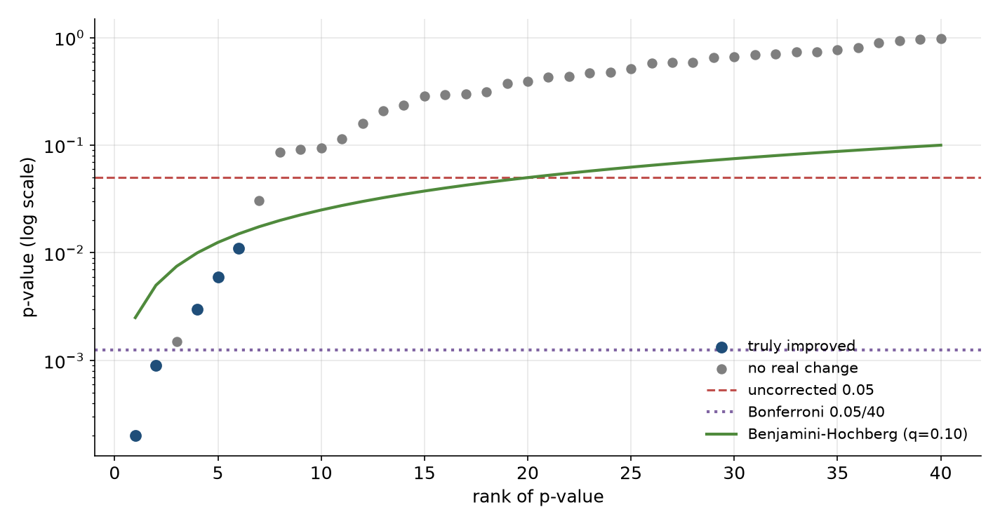

Eval study notes · Coding practice set
An evaluation platform at a lab does not run one test. It runs dozens of benchmarks on every checkpoint of every run, and dashboards colour each cell green or red depending on whether it moved. That is a machine for producing false discoveries, and the people who look at it are the researchers deciding where the next training run’s compute goes. This chapter is about the statistics of looking at many numbers at once, and about the design choices that keep a dashboard honest.
Suppose a new checkpoint is evaluated on 40 benchmarks, and in truth it is exactly as good as its predecessor on all of them. Each benchmark comparison is run as a paired test at α = 0.05. How many cells do you expect to light up as “significant”? Think about it before reading on.
Each test individually has a 5 percent chance of a false positive. Across 40 independent tests you should expect two false alarms on average, and the probability that at least one cell lights up is 1 − 0.95⁴⁰, which is 87 percent. So on a dashboard of 40 benchmarks, a checkpoint that changed nothing will almost always show at least one “significant” improvement or regression, and a researcher looking for good news will find it. Multiply by twenty checkpoints and a handful of model variants and the dashboard will show dozens of significant cells every week from noise alone.
This is the multiple comparisons problem, and it has a famous informal cousin, the “garden of forking paths” (Gelman and Loken’s phrase): even when only one test is formally run, an analyst who chose which benchmark, which metric, which subset and which prompt template to report after seeing the data has implicitly run many. Eval culture is unusually exposed to this because there are so many free choices: few-shot count, chat template, temperature, answer-extraction regex, whether to count truncated answers as wrong. A model team that tries six prompt formats and reports the best one has inflated its result whether or not it meant to.
The oldest fix is Bonferroni: if you run m tests and want the probability of even one false positive across all of them to stay below α, test each one at α / m. With 40 benchmarks, each individual comparison needs p < 0.00125. It is simple, it is always valid, and it is very conservative, because it guards against the worst case where every test is independent and null.
Holm’s method is strictly better and only slightly more work, so it is the one to name. Sort the m p-values from smallest to largest. Compare the smallest to α / m, the next to α / (m − 1), the next to α / (m − 2), and so on, stopping at the first one that fails; everything before the stop is significant. It controls the same family-wise error rate as Bonferroni but rejects more often when several effects are real.
For an eval dashboard, the family-wise error rate is usually the wrong target. Researchers can live with a few false leads among many true ones; what they cannot live with is a list of “significant” changes that is mostly noise. The false discovery rate (FDR) captures that: of the comparisons flagged as significant, what fraction are false?
The Benjamini-Hochberg procedure controls FDR at a chosen level q, say 10 percent. Sort the p-values ascending; find the largest rank i for which p₍ᵢ₎ ≤ (i / m) × q; flag everything up to and including that rank. Intuitively, the threshold loosens as you go down the list, because if many small p-values are present, a few real effects are likely and the procedure lets more through. For a dashboard that runs dozens of benchmarks per checkpoint, Benjamini-Hochberg at q = 0.05 or 0.10 is a sensible default for what gets coloured.

Knowing the procedures is the easy part. The platform-level answer an interviewer wants is about where the corrections live and how to make good behaviour the default. Several design choices follow.
The first is to pre-register the decision metrics. Before a training run, the team names a small set of headline benchmarks that will decide checkpoint promotion, perhaps five, with their configs frozen. Those get tested at full rigour. Everything else on the dashboard is exploratory, labelled as such, and corrected for multiplicity. This is how clinical trials avoid the garden of forking paths, and it maps directly onto how training teams should use evals.
The second is to freeze and version everything that is a free choice: prompt template, few-shot exemplars and their order, sampling parameters, answer extractor, grader version, and the dataset revision. When any of these changes, the result is a new benchmark version and old numbers are not compared against new ones. Many published discrepancies between labs on the same benchmark come down to exactly these choices.
The third is to put the uncertainty in the visual, not in a footnote. A dashboard cell should show the paired difference with its confidence interval, coloured only when a corrected test says so, and greyed when the benchmark is too small to detect the effect sizes in play. That single change does more to stop researchers chasing noise than any training session on p-values.
The fourth is to aggregate thoughtfully. Many labs combine benchmarks into a composite score per capability (maths, coding, reasoning, knowledge, safety). A composite has far less multiplicity than its parts and usually more signal, but it hides regressions; a good platform shows the composite as the headline and lets anyone drill down, with the drill-down corrected.
The same logic applies to the monitoring side of an eval platform, often called detecting “evaluation degradation”. If you alert whenever any of 40 benchmarks drops by more than its 95 percent interval, you will page someone most days for nothing. Alerting rules for eval scores therefore look more like anomaly detection on a time series than like a single hypothesis test: compare against the expected range for that benchmark given its historical run-to-run variance, require the drop to persist across consecutive checkpoints or to appear on a pinned reference model (which isolates infrastructure changes from model changes), and route infrastructure-shaped anomalies (a benchmark goes to exactly zero, or all benchmarks move together) differently from model-shaped ones. Chapter 5 develops this.
Run forty tests at α = 0.05 on a model that changed nothing and you will see at least one “significant” result 87 percent of the time. Bonferroni (divide α by the number of tests) or, better, Holm controls the chance of any false positive; Benjamini-Hochberg controls the fraction of flagged results that are false and is usually the right default for a dashboard. The bigger wins are structural: pre-register a few decision metrics, version every free choice so that numbers are only compared like for like, show intervals rather than bare deltas, and design regression alerts as time-series anomaly detection rather than one test per cell.